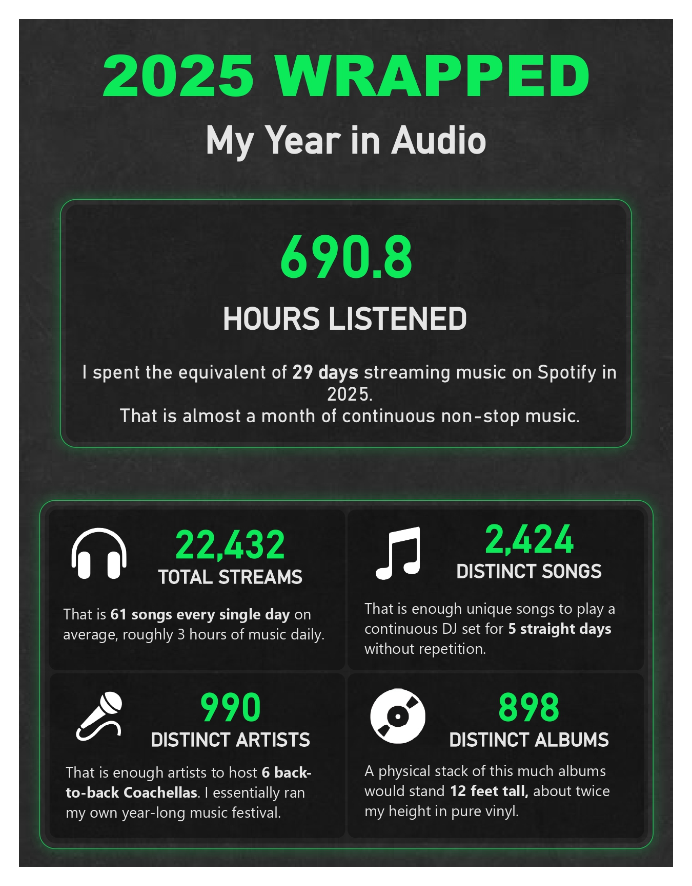
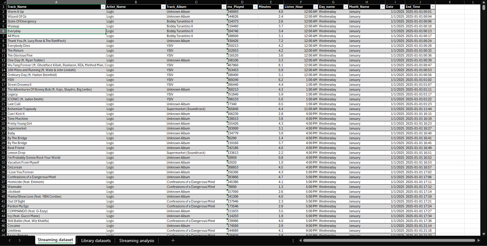
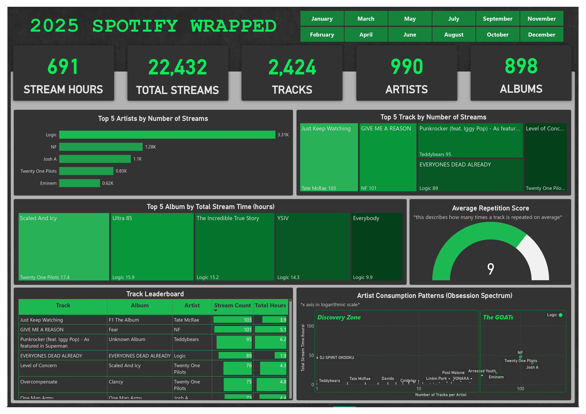

Moving beyond the standard "Wrapped" to uncover the granular details of my year in audio.
Standard Spotify Wrapped summaries only provide surface-level metrics at the end of the year. I wanted to analyze my raw streaming history to uncover deeper behavioral trends, precise streaming volumes, and my true top artists by both play count and time spent listening.
I requested my raw JSON streaming data from Spotify, converted it to CSV, and used Excel extensively to clean, parse, and enrich the data. I flattened the dataset and extracted temporal data (days, months, dates) directly in Excel before importing the flat file into Power BI to build an interactive visual report.

The main page of my 2025 Spotify Wrapped Power BI report showcasing my top artists and overarching listening metrics.
(Click image to view full size)
Raw JSON from Spotify Privacy Portal → Converted to flat CSV → Excel (Temporal Extraction, millisecond conversions, and XLOOKUP Enrichment) → Power BI (Flat File Visualization).
Spotify JSON → CSV → Excel → Power BI
Here's a glimpse into the technical work that powers this project:

Flattened JSON data with enriched temporal features

Interactive visualizations and streaming analytics
Here's a sample of the Excel formulas used to enrich and extract temporal features from the Spotify data:
// Using XLOOKUP to enrich the main table with Album data
=XLOOKUP([@[Track_Name]] & [@[Artist_Name]], MyLibrary_Tracks[tracks/track] & MyLibrary_Tracks[tracks/artist], MyLibrary_Tracks[tracks/album], "Unknown Album")
// Extracting Day Name from End_Time
=TEXT([@[End_Time]], "dddd")
// Converting milliseconds to minutes for listening duration
=[@[ms_Played]]/60000
Here's what I achieved and learned:
Total Hours Listened
Total Streams
Top Artist by Volume
Distinct Artists